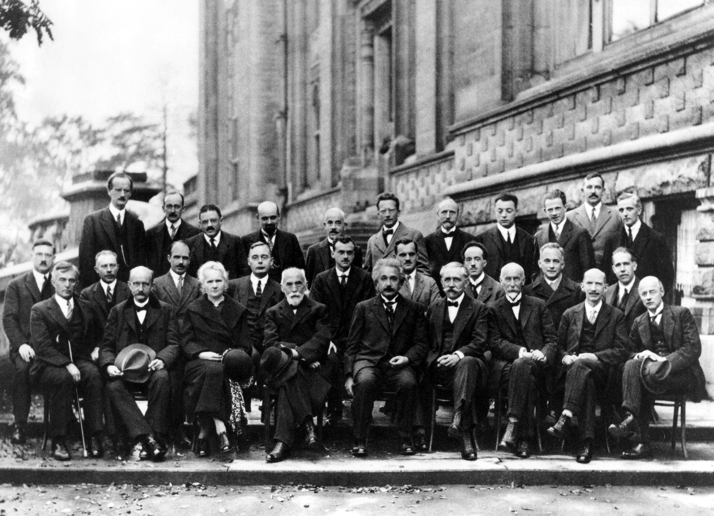

Um námsefnið
Þetta námsefni er ætlað öllum sem langar að læra eðlisfræði, sérstaklega þeim sem eru að hefja nám við Verkfræði- og Náttúruvísindasvið Háskóla Íslands (VoN).
Farið er yfir helstu grunnatriði í eðlisfræði sem gott er að hafa góð tök á í upphafi námsins en efnið er sett fram til að gefa verðandi nemendum tækifæri til að skerpa á þessum atriðum.
Námsefnið var unnið með styrk úr Kennslumálasjóði HÍ .
Hvað er eðlisfræði?
Eðlisfræði er grein raunvísindanna þar sem skoðað er samhengi efnis, orku, tíma og rúms og því lýst á máli stærðfræðinnar.
Meginmarkmið eðlisfræðinga er að skilja hegðun alheimsins og setja hana fram á máli stærðfræðinnar. Við eðlisfræðirannsóknir hefur margt komið í ljós sem hefur nýst mannkyninu í tækniþróun, en að sama skapi hefur framþróun tækninnar gert eðlisfræðingum kleift að kafa enn dýpra. Góður skilningur á eðlisfræði nauðsynlegur öllum þeim sem vilja að finna upp nýjar og sniðugar lausnir, t.d. verkfræðingum og efnafræðingum.
Rannsóknir og uppgvötanir í eðlisfræði eru grundvöllur fyrir allri tækni nútímans og framtíðarinnar.
Saga eðlisfræðinnar
Eðlisfræði varð að afmarkaðri grein vísindanna á 17. öld, þegar eðlisfræðingar tóku að beita vísindalegum aðferðum til þess að rannsaka eðlisfræðileg lögmál (e. laws of physics). Eftir framþróun í ljósfræðum tóku menn að þróa betri linsur og í kjölfarið komu fram stjörnusjónaukar. Þá komust Kópernikus, Kepler og Galíleó að því að jörðin færi í kringum sólina (en ekki sólin í kringum jörðina eins og áður var talið) og settu fram jöfnur sem lýstu hreyfingum hnatta í sólkerfinu. Segja má að þetta hafi verið upphaf stjarneðlisfræðinnar.
Leibniz og Newton settu báðir fram stærðfræðigreiningu (e. calculus), eitt sterkasta stærðfræðitól eðlisfræðinga, en Newton setti líka fram lögmál um krafta, þyngdarsvið og ljós. Mörg viðfangsefni eðlisfræðinnar eins og aflfræði (e. classical mechanics), varmafræði (e. thermodynamics), efnafræði (e. chemistry) og rafsegulfræði (e. electrodynamics/electromagnetism) tóku stór skref í tengslum við iðnbyltinguna á fyrri hluta 19. aldar.
Allt þetta snýst um stórsæja (e. macroscopic) efnisheiminn, þann sem við sjáum og finnum fyrir hvert sem við lítum. Við köllum þetta klassíska eðlisfræði (e. classical physics) og hún dugar í langflest viðfangsefni verkfræðinga.

Undir lok 19. aldar fóru eðlisfræðingar því að velta fyrir sér hvað væri að gerast í hinum smásæja (e. microscopic) heimi. Upp frá þessu spratt nútíma eðlisfræði: skammtafræði (e. quantum mechanics), kjarneðlisfræði (e. nuclear physics), öreindafræði og afstæðiskenningin .
Tilkoma nútímaeðlisfræðinnar í upphafi síðustu aldar olli miklu umróti í vísindaheiminum en margir eðlisfræðingar lögðu sitt af mörkum. Hefð er fyrir því að kenningar, jöfnur og fastar heiti eftir upphafsmanni sínum og því þekkja eðlisfræðingar nútímans til þeirra sem lögðu grunninn að viðfangsefnum nútímans.

Þessi mynd er tekin í október 1927, á fimmtu Solvay-ráðstefnunni í Brussel. Þá var nútímaeðlisfræðin að taka stór skref og í fararbroddi voru ungir eðlisfræðingar með háleitar hugmyndir. Þar voru saman komnir mestu eðlisfræðingar 20. aldar, meðal annars Einstein, Schrödinger, Lorentz, Curie og Bohr . Af þeim 29 sem mættu á ráðstefnuna fengu 17 Nóbelsverðlaun en Curie var sú eina sem fékk Nóbelsverðlaun í fleiri en einni grein (eðlisfræði og efnafræði).
Nú á dögum er helsta áskorun eðlisfræðinga að útbúa kenningu sem sameinar allt það sem þekkt er fyrir og brúar bilið milli almennu afstæðiskenningarinnar og skammtafræði, oft kölluð kenning um allt (e. Theory of Everything).